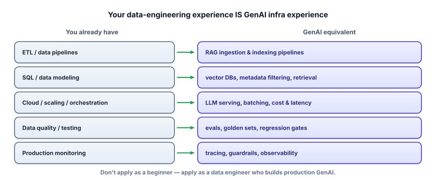

Positioning your experience
If you’re coming from data engineering, your decade of work is an asset, not a gap to apologize for — but only if you frame it right. This lesson shows how to translate what you’ve already done into the language GenAI teams are hiring for.
Why framing is the biggest lever you have
The same résumé can read two completely different ways. Framed badly, a data engineer pivoting to AI looks like “someone with no GenAI experience starting over.” Framed well, the very same person looks like “a production engineer who already knows how to move, model, scale, and quality-check data — now applying it to LLM systems.” Nothing about your history changed; the interpretation did. For an experienced engineer, getting this framing right is worth more than any single new skill, because it moves you out of the giant pile of beginners and into the small pile of people who can actually ship.
And the reframing is honest, not spin. Production GenAI is, to a surprising degree, a data and systems problem wearing an AI hat. Retrieval is a data pipeline. Evaluation is data quality and testing. Serving is throughput, caching, and cost. You have done the hard, unglamorous version of all of these for years.
Translate what you’ve done

Now rewrite your résumé bullets through that lens. Keep the real accomplishment and the metrics; change the framing so the transferable skill is obvious. For example:
Before: “Built and maintained ETL pipelines ingesting 2 TB/day into Snowflake.”
After: “Built large-scale ingestion pipelines (2 TB/day) — the same chunking, deduplication, and metadata-tagging work that powers retrieval (RAG) systems.”
Before: “Owned data quality monitoring and alerting across 40+ tables.”
After: “Designed data-quality checks and regression gates — directly analogous to LLM evaluation: golden datasets, automated quality metrics, and catching regressions before release.”
Before: “Optimized Spark jobs to cut cloud spend 35%.”
After: “Cut compute cost 35% through batching and caching — the same levers that control LLM serving cost and latency at scale.”
See the move: you’re not inventing experience, you’re naming the bridge to the hiring manager so they don’t have to. Add a short “GenAI projects” section at the top with your capstones, and the story completes itself — proven production engineer, plus demonstrated GenAI skills.
Aim at the right roles
Target titles where your background is an advantage, not a mismatch: AI/ML Engineer, Applied AI Engineer, GenAI Engineer, RAG/Platform Engineer, AI Data Engineer, LLM Infrastructure. These roles are about building reliable systems around models — your wheelhouse. Avoid aiming first at “ML Research Scientist” or “Research Engineer” roles: those want deep math, model training from scratch, and often a PhD — a different game this course doesn’t target. Knowing which pile to stand in is half the battle.
Have this ready for recruiters and the top of your résumé: “Data engineer with 10 years building production data systems, now focused on applied GenAI — I build and evaluate RAG and agent systems, with the data, scaling, and reliability background to run them in production.” It states the pivot, the proof, and the edge in one breath.
- Framing is your biggest lever: the same history reads as “no experience” or “production-ready” depending on wording.
- Production GenAI is largely data + systems work — retrieval, evals, and serving map straight onto your background.
- Rewrite bullets to name the bridge (ETL→RAG ingestion, data quality→evals, cost tuning→serving), keeping real metrics.
- Target applied/infra roles (AI/ML Engineer, RAG/Platform, AI Data Engineer) — not research-scientist roles.
- Lead with a one-line pitch: proven engineer + demonstrated GenAI projects + production edge.
Take three real bullets from your current résumé and rewrite each to name its GenAI bridge, keeping the metrics. Then write your one-line pitch in your own words.
▸ A worked rewrite
Original: “Migrated batch reporting to a streaming architecture, reducing data latency from 6 hours to 5 minutes.”
Rewritten: “Re-architected a batch system into low-latency streaming (6 hrs → 5 min) — the same latency engineering (streaming, incremental processing) that makes LLM applications feel responsive.”
Why it works: it keeps the impressive, verifiable metric (the reviewer still sees a real win) but adds a clause that connects the skill to LLM serving, which is exactly what Track 8 is about. You’re handing the interviewer the talking point — “tell me about latency optimization” — and you’ll answer it from a decade of real experience, not a tutorial. That’s a conversation you win.
You’re a data engineer with no commercial GenAI experience and you keep hesitating to apply. What’s the most effective move?
A real worry for career-changers is downleveling — being offered a junior title and pay because the GenAI piece is new. The way to resist it is to make the interview about the 90% that isn’t new. Seniority is judged largely on system design, production judgment, and the ability to reason about trade-offs and failure modes — all of which you have in abundance. When you steer the conversation toward how you’d scale retrieval, control cost, catch regressions, and handle incidents, you’re interviewing as a senior engineer who happens to be applying that judgment to LLMs, not as a beginner who happens to have a long résumé.
It also helps to preempt the objection out loud. Saying “my LLM-specific experience is from projects rather than production, but the production engineering around models — data pipelines, scaling, reliability, cost — is exactly what I’ve done for ten years” is disarming because it’s honest and it reframes in the same sentence. Most interviewers aren’t looking for someone who has done everything before; they’re looking for someone who will clearly succeed, quickly. A confident, specific account of your transferable strengths plus tangible projects is a far more convincing answer to “can this person do the job?” than a year of someone else’s mediocre GenAI experience.
You can now present your work and yourself. The last rehearsal before the real thing: putting it all together under interview pressure. Next: the mock interview drill.